새 프롤로그 그림: 원본 → 전처리 결과
대응표
| 원래 파일 이름 | 새 이름 | 판단 근거 | 프레임 |
|---|---|---|---|
A91EBB5E-312D-4880-9A91-15B28659BA4D.png | bg_pro2_house | 햇살 드는 실내, 가운데 이로리 화로와 주전자, 왼쪽에 개어 둔 이불 | |
1FA47849-DA42-47A5-8707-78EFDC561945.png | bg_pro2_yard | 초가집 툇마루 앞마당, 빨랫줄의 천, 대나무 울타리 | |
D5A561F7-CF07-42C3-AA63-5C0F5814F357.png | bg_pro2_street | 등롱 줄을 건 밝은 마을 길, 만두 찜통 가게, 가운데 붉은 도리이 신사 계단 | |
A2756280-692C-4EE8-90F1-84EFDD2009F8.png | bg_pro2_gate | 삼나무 숲 앞 돌 도리이와 석등 | |
3FF77765-1907-4BC3-ABB8-192E36D38F8C.png | bg_pro2_cave | 비 오는 새벽 동굴 입구, 멀리 마을 쪽 연기 기둥 | |
191F365C-54D4-4E28-8B82-54731322DEBB.png | bg_pro2_ash | 비 오는 새벽, 무너진 집 · 우물 · 쓰러진 도리이, 잿더미 | |
9CC851B0-62AF-4567-9E4F-48DF662320EA.png | cg_A | 벚나무 가지 위에 겹친 두 손, 손 아래 빛나며 피는 꽃 한 송이 | |
95ECCCEE-F563-4C90-8212-60CE72412776.png | cg_B | 빗속 검게 탄 큰 나무 앞 돌무덤 두 개, 방울을 든 채 무릎 꿇은 아카네 | |
E3117D04-1D27-4C71-862E-E27A92840F4A.png | hakuya_traveler | 삿갓 · 회색 망토 · 지팡이: 돌에 앉기 2, 만두(김) 들기 2, 일어서기 2, 걷기 6 | 12 / 설명 12 |
470DF9DE-3C44-4FFB-A6AE-92811FEDB436.png | akane_morning | 흰 잠옷 · 붉은 이불: 자기 2, 하품 · 기지개 2, 머리 묶기 2, 일어서기 4 | 10 / 설명 10 |
4D5CFFC3-D567-4422-B5C1-16B2217A2C64.png | akane_emote1 | 검은 기모노(마른 모습): 쪼그려 앉기 2, 손 뻗기 2, 불씨 1, 정좌 2, 밥 먹기 2, 웃기 1 | 10 / 설명 10 |
116FDC58-3725-4640-8A65-243AE41AFA31.png | akane_emote2 | 머리 · 옷이 젖어 늘어진 모습, 방울 · 흙 파기 · 돌 치기가 있음 | 14 / 설명 14 |
AC761801-25E7-43FD-97C9-CD4FDF60A835.png | family_sitting | 붉은 기모노 하루 6프레임 + 앞치마 소이치로 4프레임 | 10 / 설명 10 |
EB3BE145-212E-4CF5-95A7-13C6A896F052.png | villagers_elder | 만두 바구니 든 할머니 4 + 지팡이 노인 4 | 8 / 설명 8 |
F5323BD8-A0E4-4ECA-86B0-BF088FDDF4DF.png | props_pro2 | 소품 12개 (묘목 2, 방울 2, 비녀, 바구니, 찜통, 삿갓, 돌무덤 2, 노점 기둥, 가면) | 12 / 설명 12 |
0A0C1F40-D30F-4237-A229-4B3FBE2A43E7.png | portraits_pro2 애매 | 초상 6칸: 아카네 3(웃음 · 젖은 슬픔 · 젖은 분노), 삿갓 나그네 2, 할머니 1 | 6 / 설명 6 |
bg_pro2_house
원본 A91EBB5E-312D-4880-9A91-15B28659BA4D.png (1672×941)
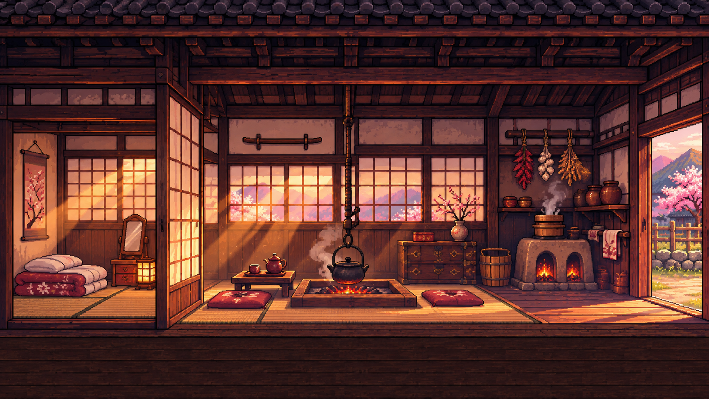
결과
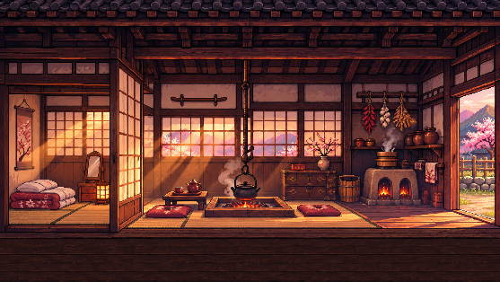
bg_pro2_yard
원본 1FA47849-DA42-47A5-8707-78EFDC561945.png (1672×941)
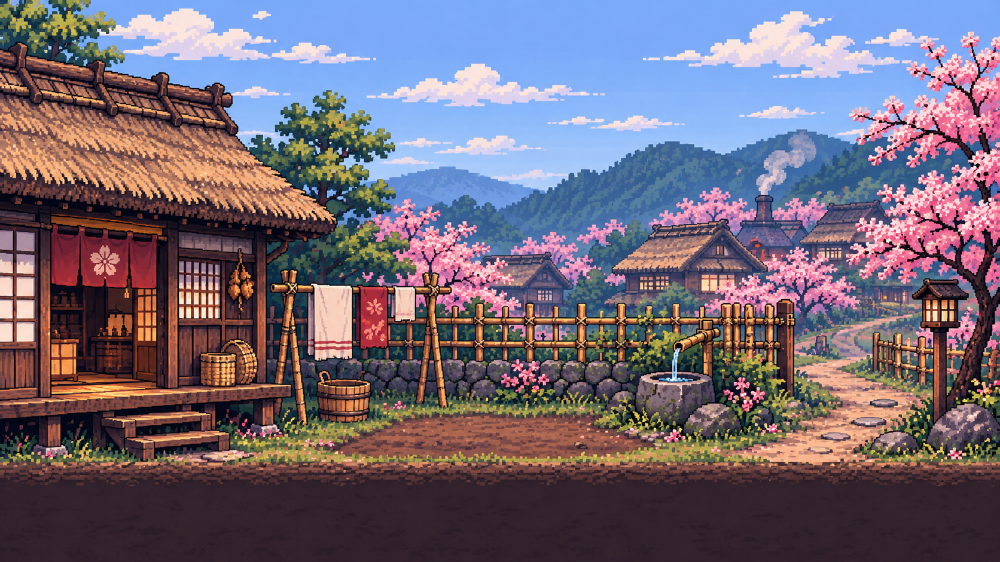
결과
bg_pro2_street
원본 D5A561F7-CF07-42C3-AA63-5C0F5814F357.png (1672×941)
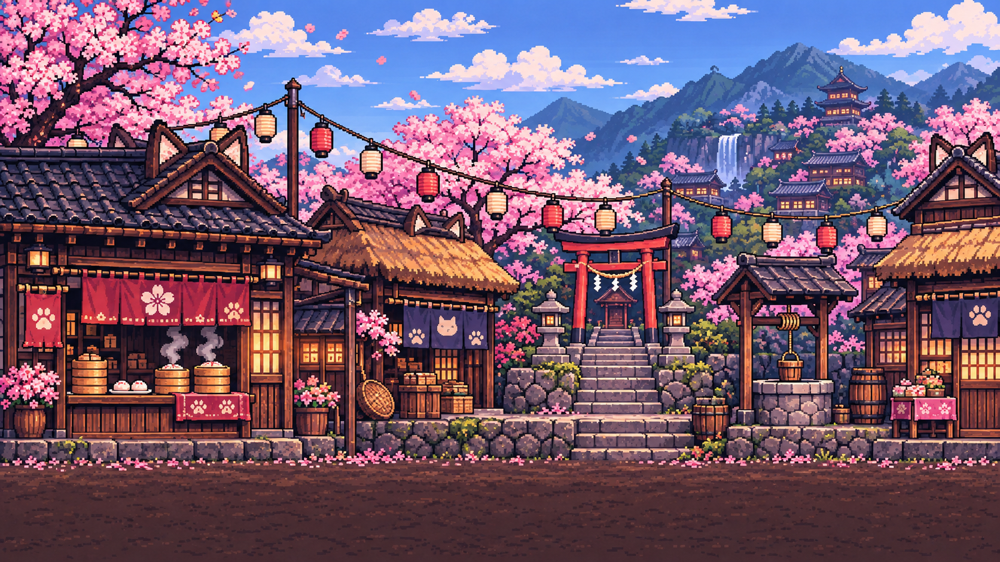
결과
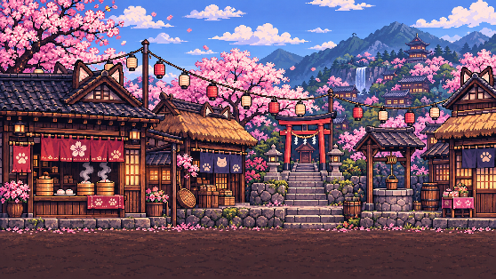
bg_pro2_gate
원본 A2756280-692C-4EE8-90F1-84EFDD2009F8.png (1671×941)
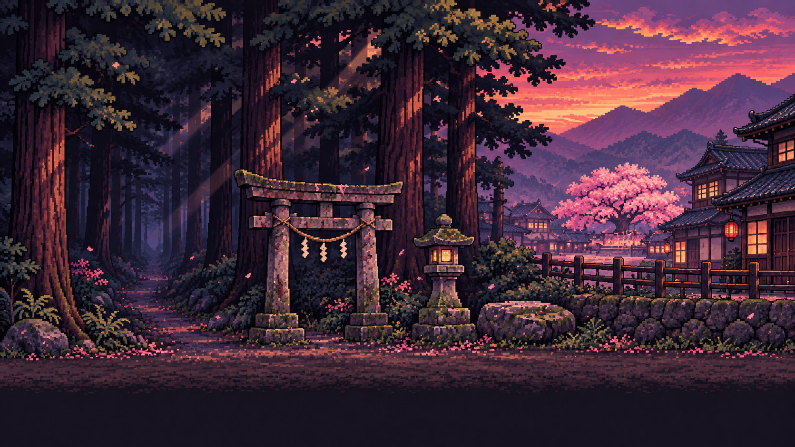
결과
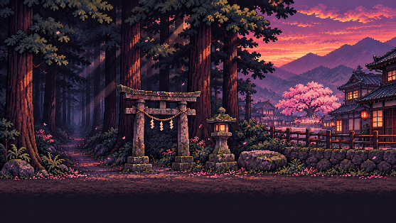
bg_pro2_cave
원본 3FF77765-1907-4BC3-ABB8-192E36D38F8C.png (1672×941)
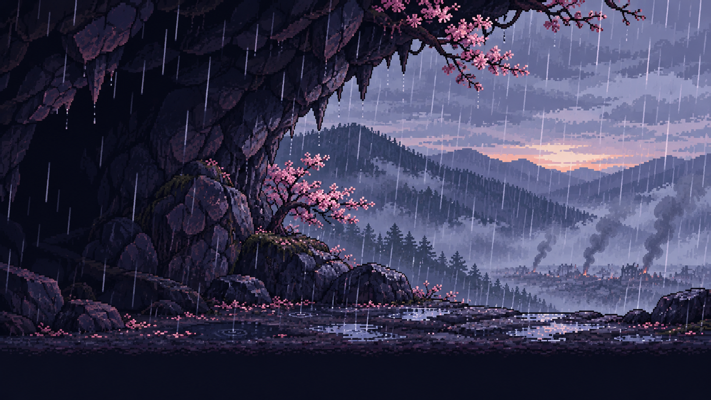
결과
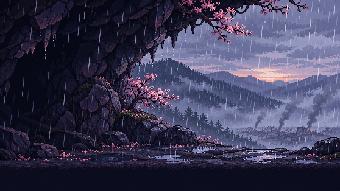
bg_pro2_ash
원본 191F365C-54D4-4E28-8B82-54731322DEBB.png (1671×941)
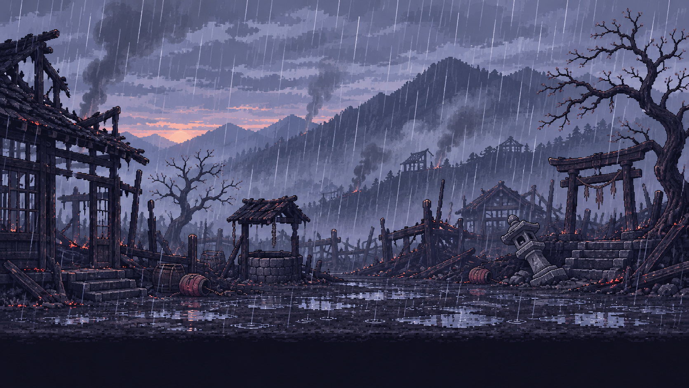
결과
cg_A
원본 9CC851B0-62AF-4567-9E4F-48DF662320EA.png (1672×941)
결과
cg_B
원본 95ECCCEE-F563-4C90-8212-60CE72412776.png (1672×941)
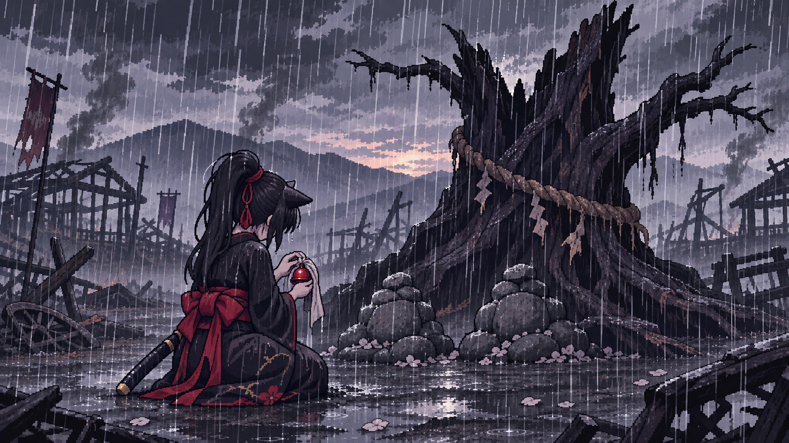
결과
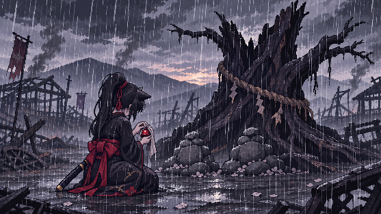
hakuya_traveler
원본 E3117D04-1D27-4C71-862E-E27A92840F4A.png (2172×724)
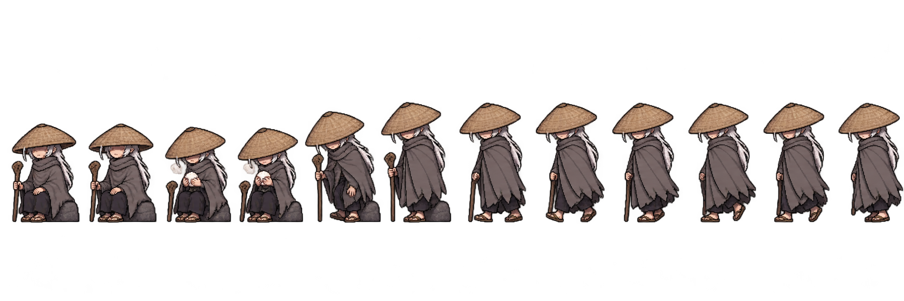
결과
비교 (같은 배율): hakuya_walk · boss
akane_morning
원본 470DF9DE-3C44-4FFB-A6AE-92811FEDB436.png (2171×724)
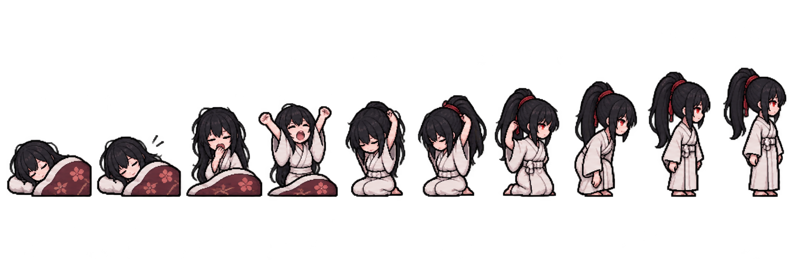
결과
비교 (같은 배율): player_idle
akane_emote1
원본 4D5CFFC3-D567-4422-B5C1-16B2217A2C64.png (2172×724)
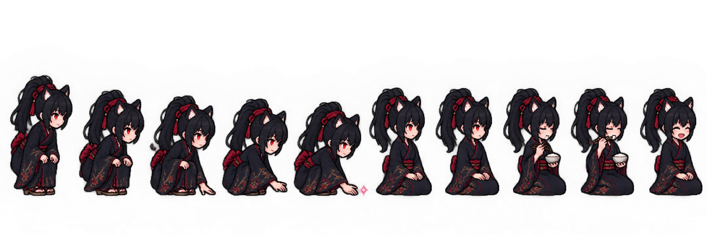
결과
비교 (같은 배율): player_idle
akane_emote2
원본 116FDC58-3725-4640-8A65-243AE41AFA31.png (2172×724)
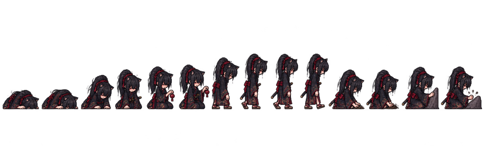
결과
비교 (같은 배율): player_idle
family_sitting
원본 AC761801-25E7-43FD-97C9-CD4FDF60A835.png (2172×724)
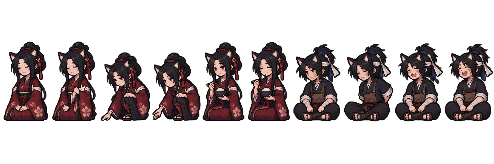
결과
비교 (같은 배율): haru_idle · soichiro_give · player_idle
villagers_elder
원본 EB3BE145-212E-4CF5-95A7-13C6A896F052.png (2172×724)
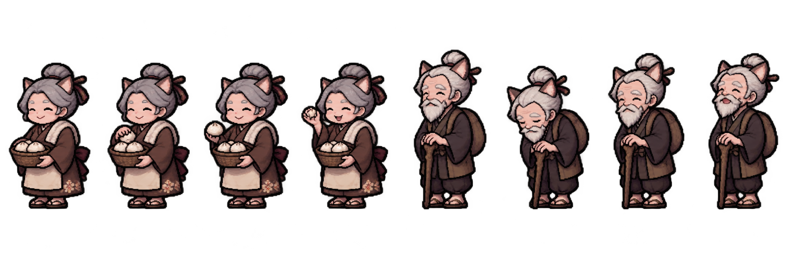
결과
비교 (같은 배율): villager_woman · villager_man · player_idle
props_pro2
원본 F5323BD8-A0E4-4ECA-86B0-BF088FDDF4DF.png (1672×941)
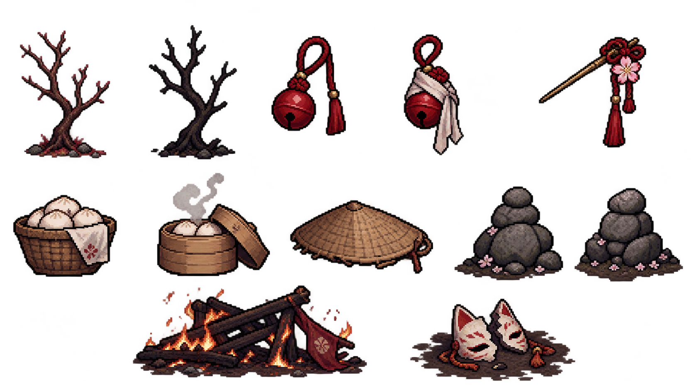
결과
27×40
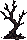
27×40
22×31
18×37

33×34
32×25
34×32
44×22
33×29
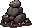
32×28

71×28
51×25
portraits_pro2
원본 0A0C1F40-D30F-4237-A229-4B3FBE2A43E7.png (2172×724)
결과
비교 (같은 배율): portraits · portraits_hakuya